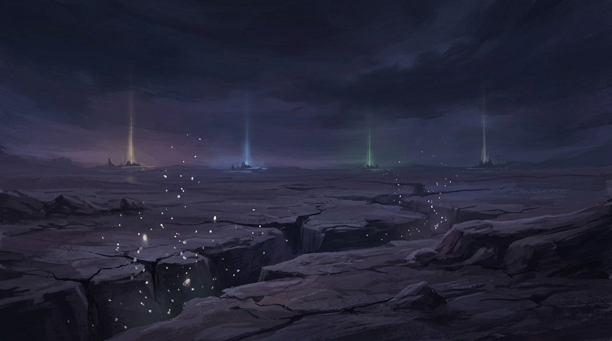
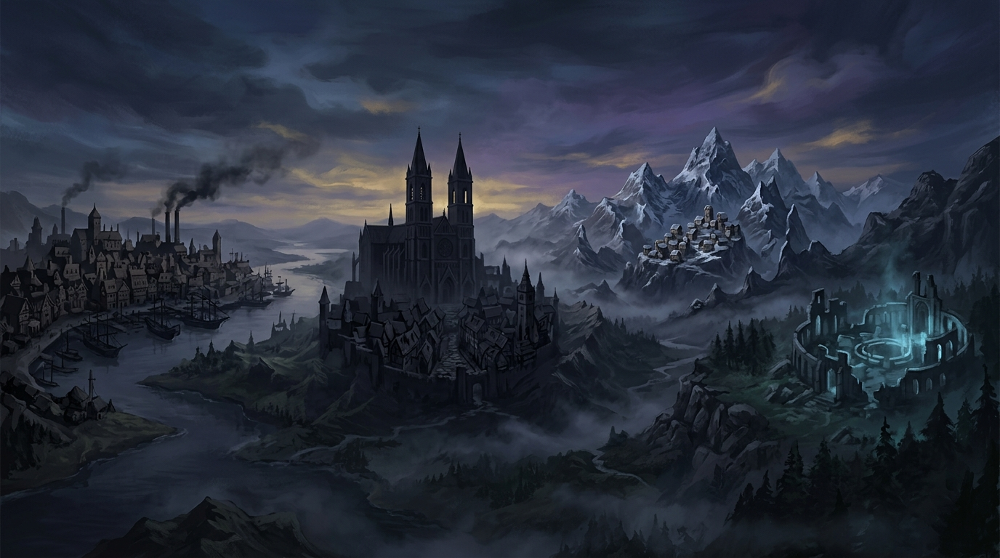
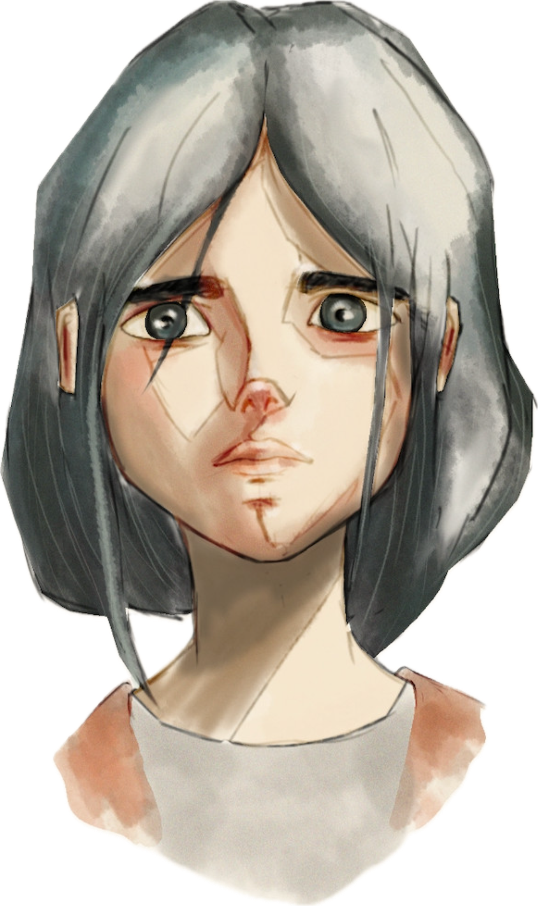
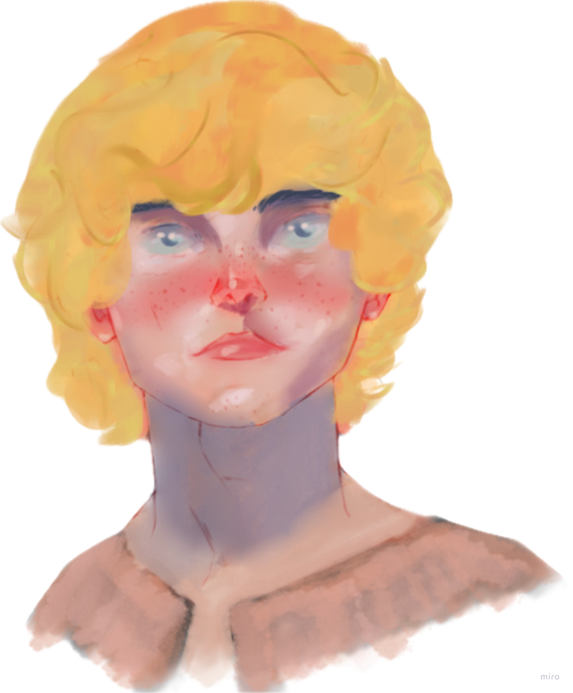
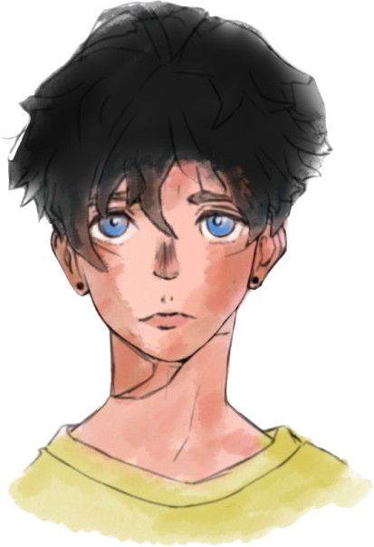
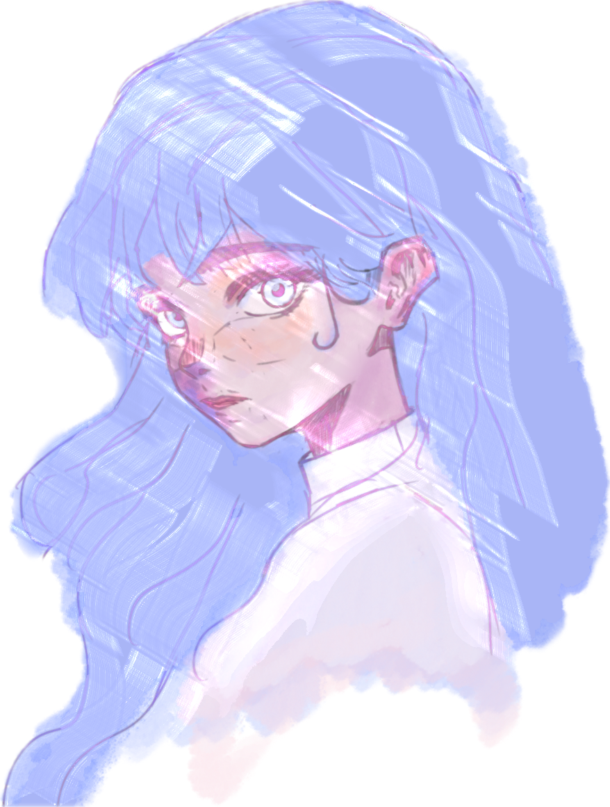

«Cuando ya no haya más esperanza...» "When there is no more hope left..."
Un mundo de fantasía épica donde las emociones han desaparecido.
Cuatro almas
destinadas
emergen para restaurar la empatía.
An epic fantasy world where emotions have vanished.
Four destined souls emerge to
restore empathy.

Hace milenios, cuando el mundo aún estaba en armonía, existían cuatro poderosas entidades que personificaban las emociones más profundas de la humanidad. Juntas, creaban algo que hoy parece un mito: Empatía.
Millennia ago, when the world was still in harmony, there were four powerful entities embodying humanity's deepest emotions. Together, they created something that today seems like a myth: Empathy.
Pero un día, sin previo aviso, una sombra oscura se cernió sobre la tierra. La codicia y la indiferencia comenzaron a esparcirse, erosionando lentamente los lazos entre las personas. Nadie sabe cómo ni por qué, pero el mundo entero cayó en un mar de aislamiento y hostilidad.
But one day, without warning, a dark shadow fell over the land. Greed and indifference began to spread, slowly eroding the bonds between people. No one knows how or why, but the entire world fell into a sea of isolation and hostility.
Han pasado mil años. Las relaciones son transacciones. La confianza es un lujo. El conocimiento, un monopolio. Y el coraje, un recuerdo lejano.
A thousand years have passed. Relationships are transactions. Trust is a luxury. Knowledge is a monopoly. And courage is a distant memory.
Cuatro individuos, destinados a convertirse en los nuevos Guardianes de las Emociones, emergerán para restaurar el equilibrio emocional en el mundo. Four individuals, destined to become the new Guardians of Emotions, will emerge to restore emotional balance to the world.
Pero en los rincones más remotos del mundo, una antigua profecía mantiene la esperanza latente. Habla de cuatro almas que, sin saberlo, llevan dentro la semilla de algo que el mundo creyó perdido para siempre.
Yet in the most remote corners of the world, an ancient prophecy keeps hope alive. It speaks of four souls who, unknowingly, carry within them the seed of something the world thought lost forever.
Cuatro fuerzas que una vez mantuvieron el equilibrio. Cuatro ausencias que hoy definen la oscuridad. Four forces that once maintained balance. Four absences that today define the darkness.
Los lazos que nos unen The bonds that tie us
Encargada de fomentar y fortalecer los vínculos entre las personas, promoviendo la alegría y el compañerismo. Su ausencia dejó un mundo donde las relaciones son transacciones y la confianza, un lujo olvidado. Tasked with fostering and strengthening the bonds between people, promoting joy and fellowship. Its absence left a world where relationships are transactions and trust is a forgotten luxury.
El coraje de enfrentar lo desconocido The bravery to face the unknown
Infundía el coraje en el corazón de las personas, motivándolas a superar sus miedos. Sin ella, la sociedad se sumió en la resignación, donde el miedo al fracaso paraliza toda acción significativa. Instilled courage in the hearts of people, motivating them to overcome their fears. Without it, society sank into resignation, where fear of failure paralyzes any meaningful action.
La armonía entre todas las cosas The harmony among all things
Promovía la reconciliación, la compasión y la resolución pacífica de conflictos. Su caída trajo un estado constante de hostilidad, donde las guerras y enfrentamientos se convirtieron en algo cotidiano. Promoted reconciliation, compassion, and the peaceful resolution of conflicts. Its fall brought a constant state of hostility, where wars and clashes became everyday occurrences.
La búsqueda de la verdad The search for truth
Guiaba hacia la iluminación y el entendimiento mutuo. Sin ella, la ignorancia prevalece, el conocimiento se monopoliza, y las personas han perdido el deseo de comprender el mundo que habitan. Guided towards enlightenment and mutual understanding. Without it, ignorance prevails, knowledge is monopolized, and people have lost the desire to understand the world they inhabit.
Cada rincón del mundo refleja las heridas de la empatía perdida de una forma diferente. Every corner of the world reflects the wounds of lost empathy in a different way.
La ciudad de la codicia The city of greed
Una ciudad comercial donde el valor de una persona se mide por su riqueza. Los mercaderes compiten sin escrúpulos, los poderosos explotan a los débiles, y todos fingen interés por los demás mientras solo buscan su propio beneficio. Aquí, todo es una obra de teatro social constante. A commercial city where a person's value is measured by their wealth. Merchants compete unscrupulously, the powerful exploit the weak, and everyone feigns interest in others while only seeking their own benefit. Here, everything is a constant social theatrical play.
La ciudad del silencio y la fe ciega The city of silence and blind faith
Una sociedad que aprendió a vivir sin preguntas, gobernada por el Codanirt y vigilada por criaturas de piedra viva llamadas Ens. No hay dinero, solo obligaciones. No hay libertad, solo obediencia. Cumplir es vivir; cuestionar es morir. A society that learned to live without questions, governed by the Codanirt and watched over by living stone creatures called Ens. There is no money, only obligations. There is no freedom, only obedience. To comply is to live; to question is to die.
La aldea olvidada en las montañas The forgotten village in the mountains
Tan remota que los caminos que una vez la conectaban con el mundo se desvanecieron hace siglos. Sus habitantes sobreviven como pueden, mientras sombras misteriosas acechan en la noche. So remote that the roads that once connected it to the world vanished centuries ago. Its inhabitants survive as they can, while mysterious shadows lurk in the night.
Las misteriosas ruinas olvidadas The mysterious forgotten ruins
Restos de una civilización antigua diseñados en anillos concéntricos que ascienden cientos de metros. Sus paredes están cubiertas de grabados en una lengua olvidada, y en su interior habitan seres que parecen responder a algo que el mundo ya no comprende: las emociones. Remnants of an ancient civilization designed in concentric rings ascending hundreds of meters. Its walls are covered in engravings in a forgotten tongue, and within dwell beings that seem to respond to something the world no longer understands: emotions.
Sin saberlo, cada uno de ellos lleva dentro la semilla de algo que el mundo creyó perdido. Unknowingly, each of them carries within the seed of something the world thought lost.

«¿Cómo se sentiría una amistad verdadera?» "How would a true friendship feel?"
Trincia

«El mundo es más grande que estas montañas» "The world is bigger than these mountains"
Elvarya

«Las preguntas son más valiosas que las respuestas» "Questions are more valuable than answers"
Aslaf

«Puedo sentir lo que otros ya no pueden» "I can feel what others no longer can"
Lune
«Una simple historia de fantasía que habla de los sentimientos humanos» "A simple fantasy story that speaks of human feelings"
Cada capítulo lleva el nombre de una emoción. Porque en Emotia, las emociones no son solo sentimientos: son la fuerza que mueve el mundo. Each chapter is named after an emotion. Because in Emotia, emotions aren't just feelings: they are the force that moves the world.
Emotia es más que un libro. Es un mundo que quiere ayudar a las personas a entender sus emociones. Sé parte de esta historia. Emotia is more than a book. It's a world that wants to help people understand their emotions. Be part of this story.
Primer libro de una trilogía · Disponible en español · Traducciones al inglés y francés como objetivos extendidos First book of a trilogy · Available in Spanish · English and French translations as stretch goals